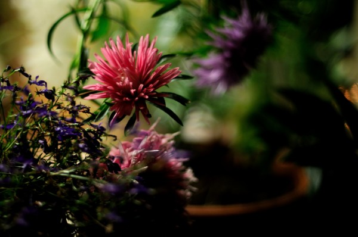

35 Подкравшаяся весна
В полночной тине тишины
Нас не разбудит ото сна
Ни шум дождя
Ни струи, что стекают с крыш
ночная тишь
сплела узоры сна
пока мы спим
прокралась в ночь весна
И под зеленою звездой
Дверь приоткроем в сладкий сон
В котором дождь
Стекает звучною слезой
Во мрак ночной
В колодец древних дрём...
Хочу на миг отыграть себе обратно вечность!
Сегодня ночью я точно буду вечной. Выберу самую прочную метлу и буду скитаться под дождем до утра, а потом окунусь в розовые предрассветные облака и погляжу на красное, наполенное кубинским ромом солнце!
Я приостановила эту бомбу замедленного действия, это коварное время.
Пусть кончается мое лето.. но ведь пока оно не кончилось - оно не кончится никогда!
Жизнь меряется не днями, а моментами. Моментами!!!!
Жизнь меряется солнцами, лунами, дождями, а никак не секундами
Я усну и проснусь в безвременье. Словно вынырну из озера, пахнущего тиной и кувшинками, окруженного тигровыми лилиями
Сегодня ночью я не позволю смерти напомнить мне о своем существовании. Я прогоню ее метлой и стану бессмертной
